Оновлено 25.11.2026 20:02. Попереду 96 дописів, розписано до 05.01.2027. Час київський. Натисніть на допис, щоб відкрити ролик чи картинку.
До сьогодні ↓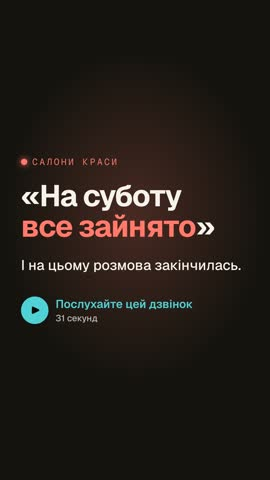
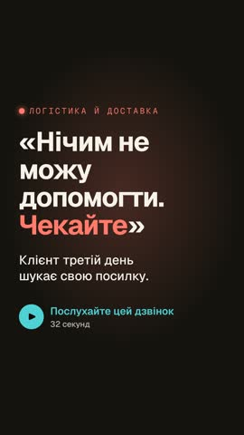
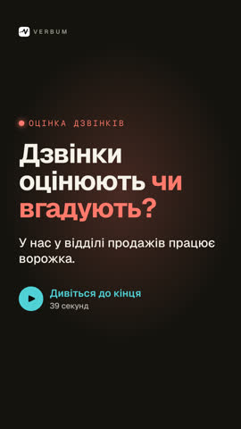
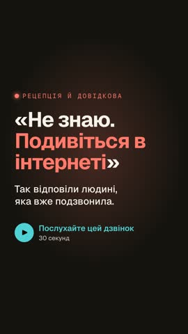
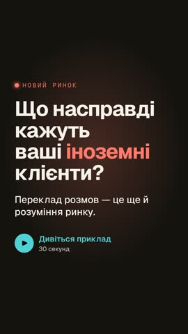
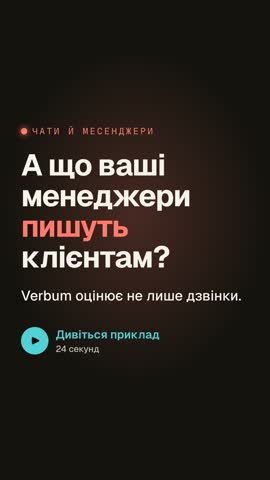
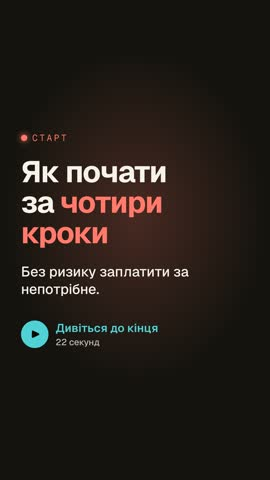
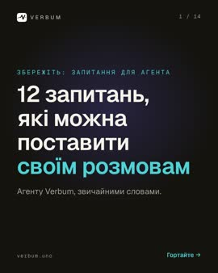
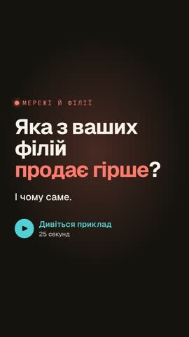
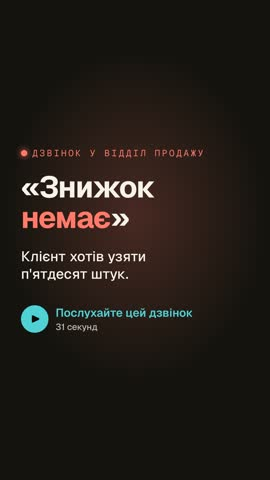
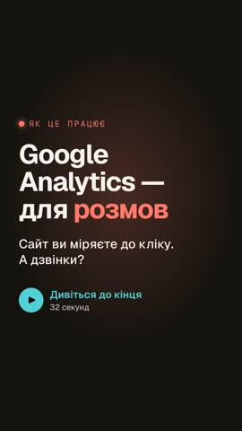
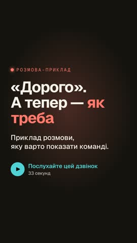
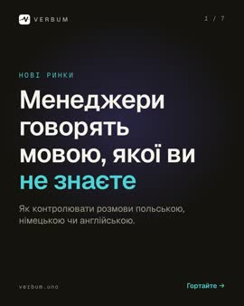
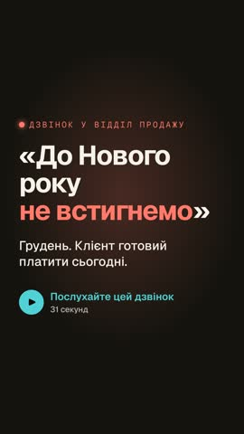
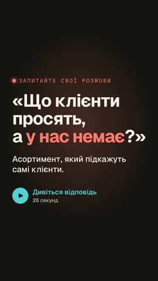
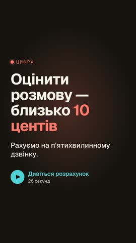
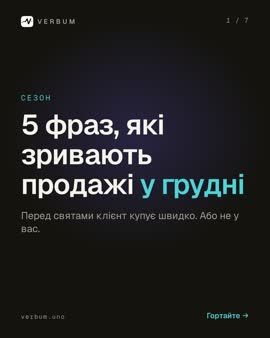
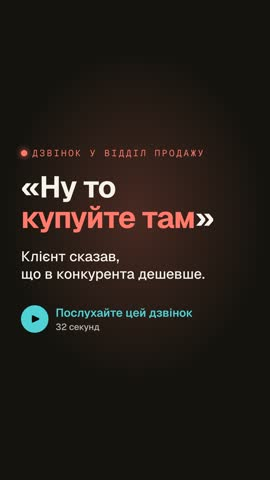
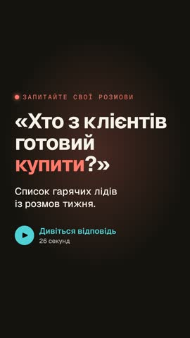
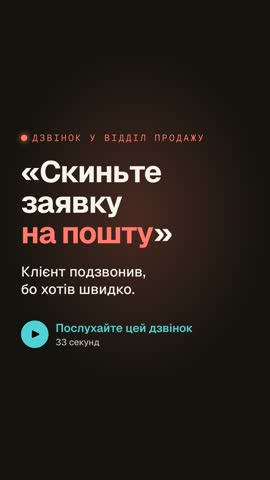
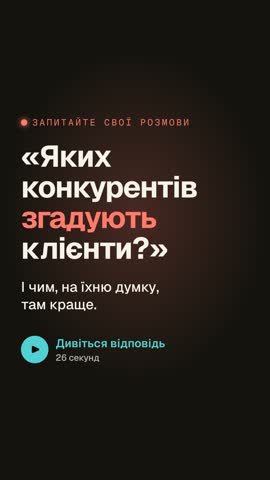
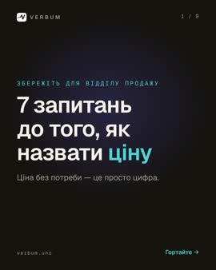
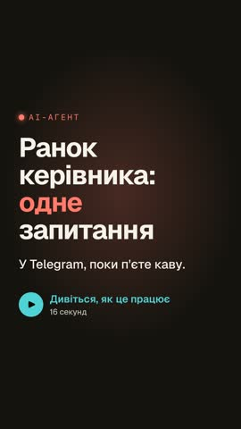
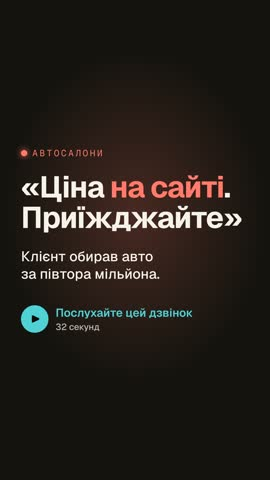
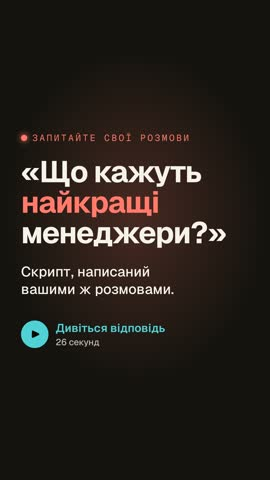
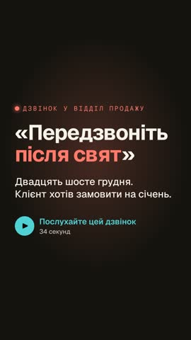
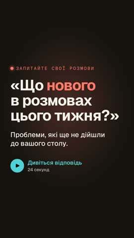
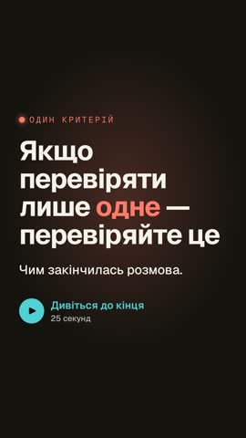
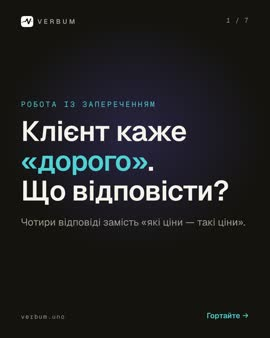
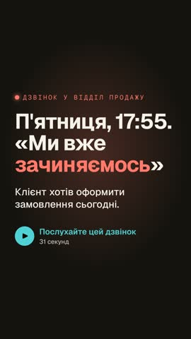
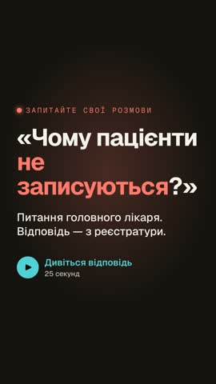
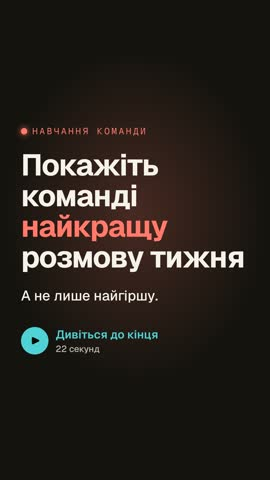
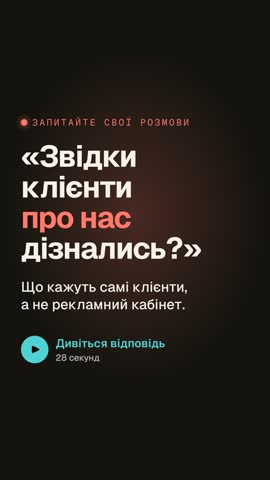
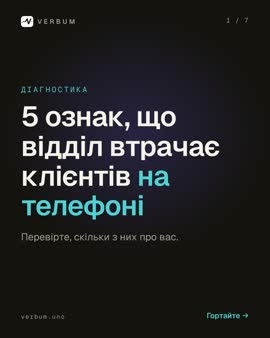
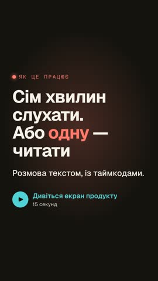
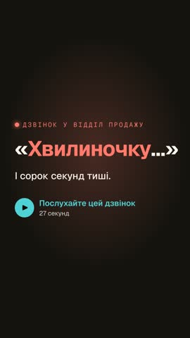
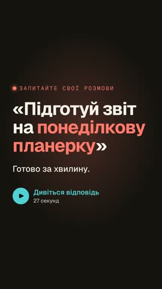
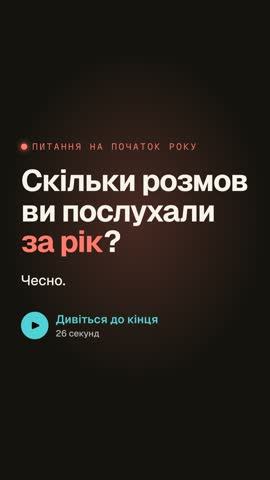
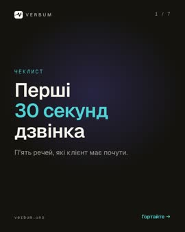
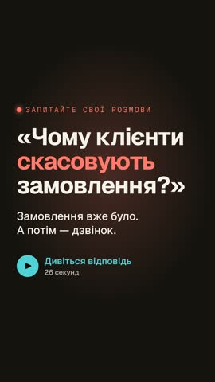
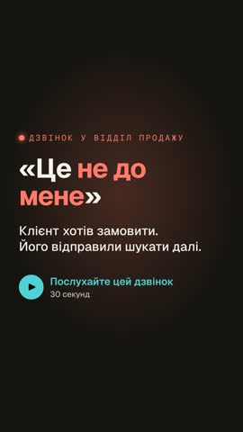
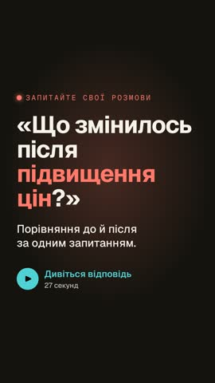
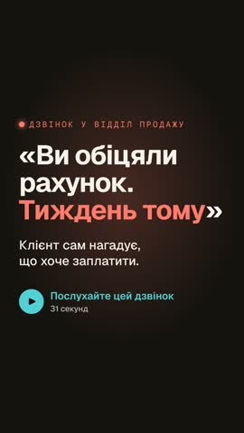
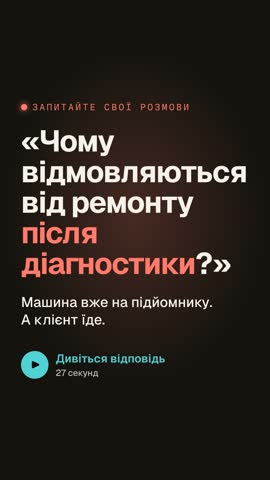
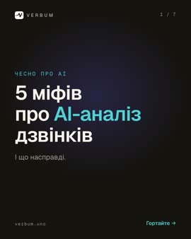
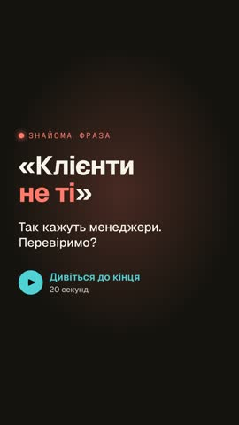
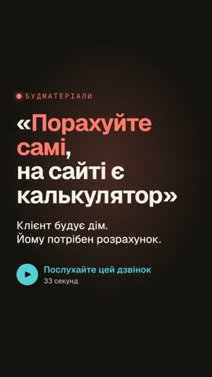
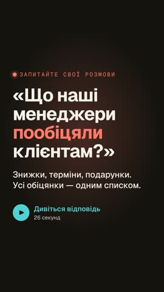
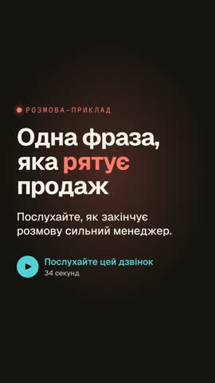
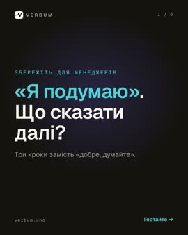